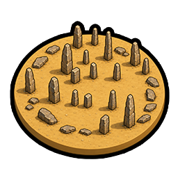
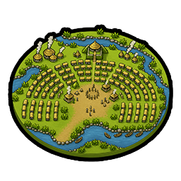
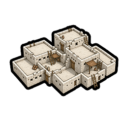

Wonders
5 prehistoric world wonders — Göbekli Tepe, Nabta Playa, Poverty Point, Çatalhöyük and the Tower of Jericho.
Göbekli Tepe
Triggers the 💡 Eureka for Agriculture. +1 ✨ Faith on each Farm in this city. Must be built on a Hill adjacent to Wheat.
"First came the temple, then the city."– Klaus Schmidt

Nabta Playa
Triggers the 💡 Eureka for Astrology when completed. Thereafter, 💡 Eurekas provide an additional 10% of a technology's cost. Must be built on Desert.
"Mortal as I am, I know that I am born for a day. But when I trace the winding courses of the stars, my feet no longer touch the earth."– Ptolemy

Poverty Point
+1 TradeRoute Trade Route capacity. Grants a Trader unit.
Your TradeRoute Trade Routes provide +1 🔨 Production. Must be built on Grassland or Plains adjacent to a River.
"These earthworks were raised by fishers and foragers — people who, by all our old certainties, had no business building at all."– Jon L. Gibson

Çatalhöyük
+0.5 🎭 Culture for each 👤 Citizen in this city. Must be built on Marsh or Floodplains (on Grassland or Plains).
"A supernova amongst the rather dim galaxy of contemporary peasant cultures."– James Mellaart
Tower of Jericho
Grants the Ancient Walls in this city when completed, requiring no technology.
+50 Outer Defense HP and +5 City outer defense Strength. +4 Loyalty per turn in this city. Must be built on Desert Floodplains or an Oasis.
"Jericho can claim to be the oldest town in the world."– Kathleen Kenyon